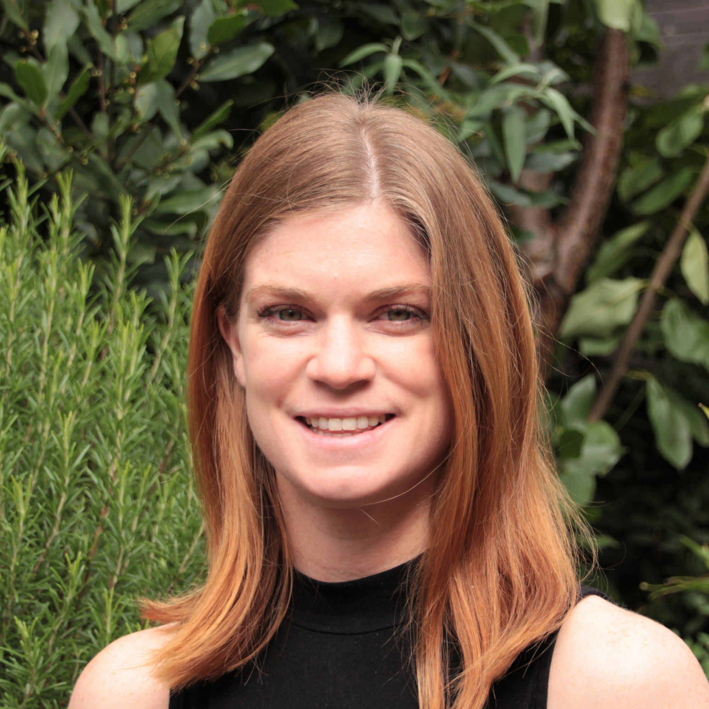
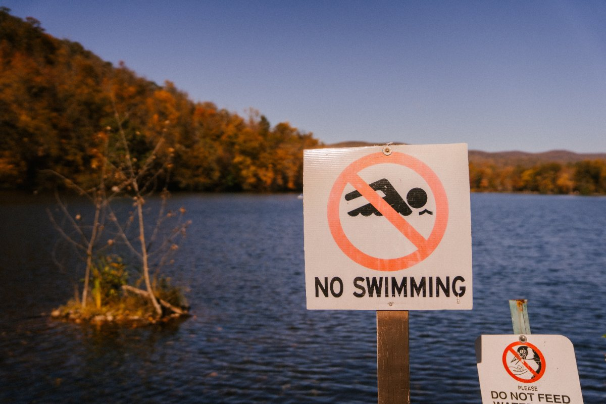

<!DOCTYPE html></html>
<html lang="en-UK">
    <head>
        <meta charset="utf-8" />
        <meta name="viewport" content="width=device-width" />
        <title>Sustainable Food Blog</title>
        <link href="../styles/design-guide.css" rel="stylesheet" type="text/css" />
        <link href="https://fonts.googleapis.com/css2?family=PT+Serif&display=swap" rel="stylesheet">
    </head>
</html>

<body>
    <!-- Blog Head Logo -->
    <header class="blog-logo">
        
    </header>

    <!-- Navigation Bar -->
    <div class="nav-bar"> 
        <button class="search-button" type="button"><h3 class="search-button-name">Vision</h3></button>
        <button class="search-button" type="button"><h3 class="search-button-name">Publications</h3></button>
        <button class="search-button" type="button"><h3 class="search-button-name">Get Involved</h3></button>
        <button class="search-button" type="button"><h3 class="search-button-name">Contact</h3></button>
    </div>
    <!-- Blog Header & Tagline-->
    <div class="blog-header">
        <h2>Factory farms are destroying our wildlife. The solution? Our local councils</h2>
        <h4>Intensive animal agriculture is killing wildlife in the UK’s rivers and air every day. But councils can halt the rise in factory farming, says Ruth Westcott, Sustain's climate and nature emergency coordinator.</h4>
        <h5>06th January 2023</h5>
    </div>
    <!-- Box containing Author's Detail-->
    <div class="author-info">
        
        <h3 class="author-name">Ruth Westcott</h3>
        <h4 class="author-job">Campaign Coordinator at Sustain</h4>
        <p class="author-blurb">Ruth co-ordinates Sustain's work on the Climate and Nature Emergency and on Sustainable Fishing, working to make food a central part of policies to tackle the climate and nature emergency at a local and national level.</p>
    </div>
    <!-- Main passage of script-->
    <div class="main-blog-content" >
        
        <p class="first-text-content">In the UK, we need to eat and produce less meat to have any hope of avoiding catastrophic climate breakdown, and we have known this for years. But in 2022 things got more serious. 140 million poultry including half the UK’s free range turkeys were culled in the latest avian flu outbreak, which is now killing vulnerable and rare wild birds across the UK. Our waterways are so polluted that a House of Lords committee warned that a ‘chemical cocktail’ of sewage, slurry and plastic is putting public health and nature at risk. In November our rivers were found to be polluted with antibiotic-resistant superbugs downstream of factory farms. Added to this, research last year from WWF linked meat in European diets with widespread deforestation and conversion of habitats in South America.
            It is extraordinary, then, that polluting livestock mega-farms are on the rise in the UK. Far from reducing, factory farming is growing. We believe local councils are key to turning this trend around, protecting citizens and our wildlife, and supporting sustainable, wildlife-friendly farming.
        </p>
        <div class="blog-list">
            <h3> We want to support councils to:</h3>
            <ol>
                <li><b>Assess the impact of the intensive agriculture in their area</b>- on wildlife, water and economy, including the impacts on deforestation, greenhouse gas emissions and biodiversity loss.</li>
                <li><b>Analyse how you they meet new targets set out in the Environment Act and Water Framework Directives</b>through action to limit intensive industrial animal farming.</li>
                <li><b>Commit to taking action</b>o control the impacts in their area, and placing a moratorium on new intensive industrial animal farming, should the evidence provide a compelling case for such action.</li>
            </ol>
        </div>
        <p class="snd-text-content">Factory farming is at odds with just about every ambition of the UK’s planning policy, including economic, social and environmental objectives, using natural resources prudently, minimising waste and pollution, and mitigating and adapting to climate change. It’s hard to imagine an industry more ecologically wasteful, harmful to the health of people and the environment and economically unsustainable. At the moment, industrial meat companies are manipulating the planning system to get factory farms approved. Councils need policies with strong commitments to protect their citizens and the environment from factory farming.
        </p>
    </div>
    <!-- Home Button-->
    <div class="end-page">
        <button type="button" class="home-button" ><a href="../project-one-rubic.html"></a></button>
    </div>
    <!-- Footer-->
    <div class="footer-blog">
        <a  class="instagram" href="https://www.instagram.com/"></a>
        <a  class="twitter" href="https://www.twitter.com/"></a>
        <a  class="facebook" href="https://www.facebook.com/"></a>
        <div class="subscribe">
            <label for="email">Subscribe:</label>
            <input type="email" id="email" name="email">
            <input type="submit" id="submit" value="Submit">
        </div>
    </div>

</body>


